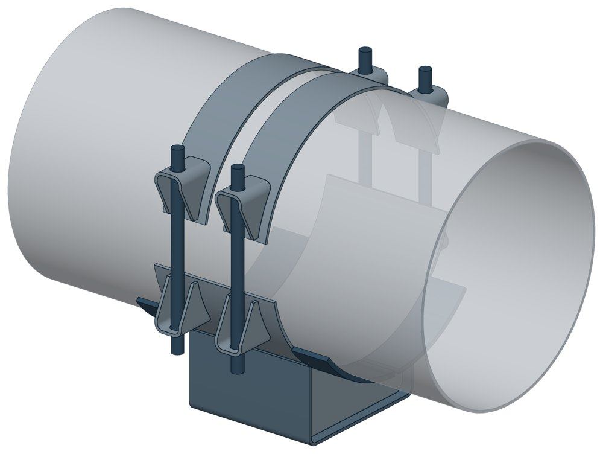
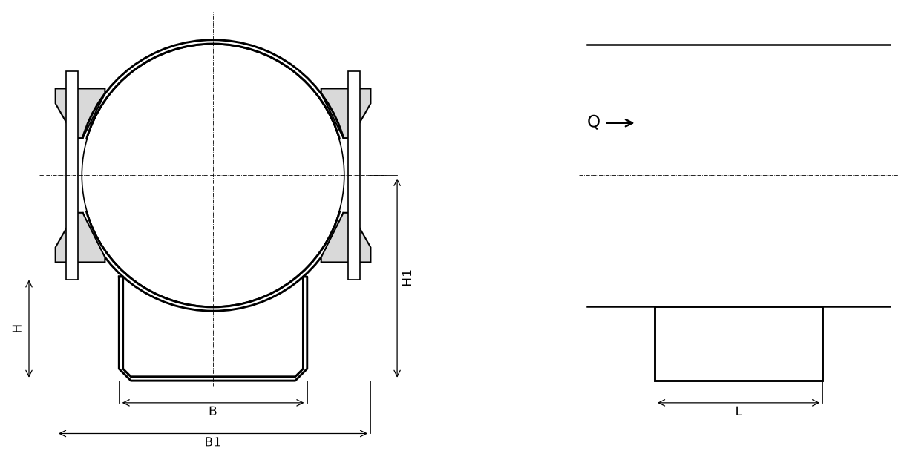

Опора неподвижная бугельная с корпусом ТС-671
Неподвижная опора на корпусе для больших диаметров: труба лежит в ложементе и прижата сверху двумя бугелями на шпильках. Корпус поднимает трубу над опорной конструкцией на 100, 150 или 200 мм.

- Диаметр трубы Dн
- 377–1420 мм
- Документ
- Серия 5.903-13 вып. 7-95
- Исполнений
- 30
- Вертикальная P
- до 292 кН
- Боковая T
- до 600 кН
- Осевая Q
- до 1800 кН
- Масса
- 34–372,3 кг
- Сталь
- Листовые детали — Ст3сп5 ГОСТ 14637-89, хомуты из круга — сталь 20 ГОСТ 1050-88. Для холодного климата — низколегированная сталь, в том числе 09Г2С; размеры опоры при этом не меняются.
- Покрытие
- По альбому серии — окраска по грунту, кроме поверхностей под сварку. Вид покрытия согласуется при заказе.
- 3D-модели
- у всех исполнений
Применение и монтаж
Назначение: где применяется
Трубопроводы тепловых сетей Dн 377–1420 мм. Держит три нагрузки сразу: осевую Q от 350 до 1800 кН, боковую T от 200 до 600 кН и вертикальную P от 37 до 292 кН.
Монтаж: как устанавливается
Корпус приваривают к опорной конструкции (катет шва 6 мм для Dн 377–426, 8 мм для Dн 530–920, 10 мм для Dн 1020–1420), трубу укладывают на подушку корпуса и притягивают бугелями: шпильки проходят через ушки бугеля и корпуса. Упоры приваривают к трубе у торцов корпуса.
Отличия от соседних типов
Dн до 377 мм — хомутовая с корпусом ТС-670: вместо бугелей круглые хомуты. Высота не нужна и боковой силы нет — бескорпусная ТС-669 (Dн до 1020 мм).
Габаритная схема ТС-671

Состав комплекта на одну опору
| Корпус сварной (подушка, скоба, рёбра, ушки) | 1 шт. |
| Бугель (подушка с двумя ушками) | 2 шт. |
| Упор | 4 шт. |
| Шпилька | 4 шт. |
| Гайка | 16 шт. |
Таблица исполнений ТС-671
| Обозначение | Код ПРОМБУРГ | Dнмм | Стенка Sмм | PкН | TкН | QкН | Нмм | Н1мм | Вмм | В1мм | Lмм | Массакг | 3D |
|---|---|---|---|---|---|---|---|---|---|---|---|---|---|
| ТС-671.00.00 | ПБ-671-0377-1 | 377 | 6 | 37 | 200 | 380 | 100 | 290 | 280 | 480 | 340 | 34 | 3D |
| ТС-671.00.00-01 | ПБ-671-0377-2 | 377 | 6 | 37 | 200 | 380 | 150 | 340 | 280 | 480 | 340 | 37,4 | 3D |
| ТС-671.00.00-02 | ПБ-671-0377-3 | 377 | 6 | 37 | 200 | 380 | 200 | 390 | 280 | 480 | 340 | 40,8 | 3D |
| ТС-671.00.00-03 | ПБ-671-0426-1 | 426 | 7 | 45 | 200 | 350 | 100 | 315 | 280 | 540 | 340 | 45,4 | 3D |
| ТС-671.00.00-04 | ПБ-671-0426-2 | 426 | 7 | 45 | 200 | 350 | 150 | 365 | 280 | 540 | 340 | 49 | 3D |
| ТС-671.00.00-05 | ПБ-671-0426-3 | 426 | 7 | 45 | 200 | 350 | 200 | 415 | 280 | 540 | 340 | 52,4 | 3D |
| ТС-671.00.00-06 | ПБ-671-0530-1 | 530 | 8 | 50 | 250 | 400 | 100 | 365 | 380 | 640 | 340 | 62,98 | 3D |
| ТС-671.00.00-07 | ПБ-671-0530-2 | 530 | 8 | 50 | 250 | 400 | 150 | 415 | 380 | 640 | 340 | 68,38 | 3D |
| ТС-671.00.00-08* | ПБ-671-0530-3 | 530 | 8 | 50 | 250 | 400 | 200 | 465 | 380 | 640 | 340 | 73,88 | 3D |
| ТС-671.00.00-09 | ПБ-671-0630-1 | 630 | 8 | 66 | 250 | 500 | 100 | 415 | 380 | 750 | 340 | 69,6 | 3D |
| ТС-671.00.00-10 | ПБ-671-0630-2 | 630 | 8 | 66 | 250 | 500 | 150 | 465 | 380 | 750 | 340 | 75,3 | 3D |
| ТС-671.00.00-11 | ПБ-671-0630-3 | 630 | 8 | 66 | 250 | 500 | 200 | 515 | 380 | 750 | 340 | 80,8 | 3D |
| ТС-671.00.00-12 | ПБ-671-0720-1 | 720 | 9 | 84 | 350 | 650 | 100 | 460 | 500 | 840 | 680 | 144,8 | 3D |
| ТС-671.00.00-13 | ПБ-671-0720-2 | 720 | 9 | 84 | 350 | 650 | 150 | 510 | 500 | 840 | 680 | 159,4 | 3D |
| ТС-671.00.00-14 | ПБ-671-0720-3 | 720 | 9 | 84 | 350 | 650 | 200 | 560 | 500 | 840 | 680 | 173,7 | 3D |
| ТС-671.00.00-15 | ПБ-671-0820-1 | 820 | 9 | 105 | 350 | 750 | 100 | 510 | 500 | 940 | 680 | 164,5 | 3D |
| ТС-671.00.00-16 | ПБ-671-0820-2 | 820 | 9 | 105 | 350 | 750 | 150 | 560 | 500 | 940 | 680 | 178,8 | 3D |
| ТС-671.00.00-17 | ПБ-671-0820-3 | 820 | 9 | 105 | 350 | 750 | 200 | 610 | 500 | 940 | 680 | 192,5 | 3D |
| ТС-671.00.00-18 | ПБ-671-0920-1 | 920 | 10 | 130 | 350 | 850 | 100 | 560 | 500 | 1070 | 680 | 199,5 | 3D |
| ТС-671.00.00-19 | ПБ-671-0920-2 | 920 | 10 | 130 | 350 | 850 | 150 | 610 | 500 | 1070 | 680 | 213,3 | 3D |
| ТС-671.00.00-20 | ПБ-671-0920-3 | 920 | 10 | 130 | 350 | 850 | 200 | 660 | 500 | 1070 | 680 | 227,1 | 3D |
| ТС-671.00.00-21 | ПБ-671-1020-1 | 1020 | 10 | 157 | 600 | 1000 | 100 | 610 | 600 | 1185 | 680 | 241,1 | 3D |
| ТС-671.00.00-22 | ПБ-671-1020-2 | 1020 | 10 | 157 | 600 | 1000 | 150 | 660 | 600 | 1185 | 680 | 258,2 | 3D |
| ТС-671.00.00-23 | ПБ-671-1020-3 | 1020 | 10 | 157 | 600 | 1000 | 200 | 710 | 600 | 1185 | 680 | 274,5 | 3D |
| ТС-671.00.00-24 | ПБ-671-1220-1 | 1220 | 11 | 220 | 600 | 1300 | 100 | 710 | 700 | 1380 | 680 | 298,1 | 3D |
| ТС-671.00.00-25 | ПБ-671-1220-2 | 1220 | 11 | 220 | 600 | 1300 | 150 | 760 | 700 | 1380 | 680 | 316,4 | 3D |
| ТС-671.00.00-26 | ПБ-671-1220-3 | 1220 | 11 | 220 | 600 | 1300 | 200 | 810 | 700 | 1380 | 680 | 334,7 | 3D |
| ТС-671.00.00-27 | ПБ-671-1420-1 | 1420 | 14 | 292 | 600 | 1800 | 100 | 810 | 700 | 1590 | 680 | 329,2 | 3D |
| ТС-671.00.00-28 | ПБ-671-1420-2 | 1420 | 14 | 292 | 600 | 1800 | 150 | 860 | 700 | 1590 | 680 | 348 | 3D |
| ТС-671.00.00-29 | ПБ-671-1420-3 | 1420 | 14 | 292 | 600 | 1800 | 200 | 910 | 700 | 1590 | 680 | 372,3 | 3D |
* Примечания к исполнениям:
- ТС-671.00.00-08 — H1: 365 → 465, ошибка сайта; альбом, лист 124;
Чтобы заказать, сообщите обозначение и код ПРОМБУРГ: +7 (499) 325-51-35, promburg@yandex.ru.
Нормативные документы
- Серия 5.903-13 вып. 7-95 Опоры трубопроводов неподвижные. Рабочие чертежи (PDF, 127 с.) — документ, по которому изготавливается изделие
- ГОСТ 14637-89 Прокат толстолистовой из углеродистой стали обыкновенного качества — редакция, на которую ссылается альбом серии; действующую редакцию уточняйте
- В альбоме серии — ГОСТ 1050-88; действует ГОСТ 1050-2013 Металлопродукция из нелегированных конструкционных качественных и специальных сталей. Общие технические условия
Связанные позиции
- Соседний тип: ТС-670 — неподвижная хомутовая с корпусом
- Парная подвижная опора: ТС-627 — скользящая бугельная (общий диапазон Dн 377–1420)
Собрать узел с этим изделием
- Конструктор узла: собрать участок с компенсатором под свои данные труба, длина, среда, условия — состав узла и спецификация бесплатно
На трубу Dн 377–1420 мм в каталоге
Позиции каталога с исполнениями на те же наружные диаметры трубы.
Детали трубопровода
- Фланец стальной плоский приварной общих Dн: 10
- Днище стальное эллиптическое общих Dн: 9
- Фланец стальной воротниковый общих Dн: 9
- Отвод стальной крутоизогнутый 90° общих Dн: 8
- Отвод стальной крутоизогнутый 90°, 09Г2С общих Dн: 6
- Заглушка стальная эллиптическая общих Dн: 4
- Переход стальной концентрический общих Dн: 3
Компенсаторы
- Компенсатор сильфонный стартовый СК общих Dн: 10
- Компенсатор сильфонный 2ОПКР общих Dн: 9
- Компенсатор сильфонный 2ОПКР (ИЯНШ) 2ОПКРИ общих Dн: 9
- Компенсатор сильфонный 2СКУ.М 2СКУМ общих Dн: 9
- Компенсатор сильфонный 2СКУ.М (ИЯНШ) 2СКУМИ общих Dн: 9
- Компенсатор сильфонный 2СКУ.ППМ (ИЯНШ) 2СКУППМИ общих Dн: 9
- Компенсатор сильфонный КС общих Dн: 9
- Компенсатор сильфонный КСО общих Dн: 9
- Компенсатор сильфонный КСО (ИЯНШ) КСОИ общих Dн: 9
- Компенсатор сильфонный КСОФ общих Dн: 9
- Компенсатор сильфонный ОПКР общих Dн: 9
- Компенсатор сильфонный ОПКР (ИЯНШ) ОПКРИ общих Dн: 9
- Компенсатор сильфонный сейсмический общих Dн: 9
- Компенсатор сильфонный СКУ.М СКУМ общих Dн: 9
И ещё 14 типов — в оглавлении каталога.
Другие опоры и подвески
- Опора неподвижная двухупорная ТС-660 общих Dн: 10
- Опора неподвижная четырёхупорная ТС-661 общих Dн: 10
- Опора неподвижная двухупорная усиленная ТС-663 общих Dн: 10
- Опора неподвижная щитовая ТС-666 общих Dн: 10
- Опора неподвижная боковая ТС-668 общих Dн: 10
- Опора скользящая приварная ТС-624 общих Dн: 10
- Опора скользящая хомутовая ТС-626 общих Dн: 10
- Опора скользящая бугельная ТС-627 общих Dн: 10
- Опора катковая двухъярусная ТС-628 общих Dн: 10
- Опорные плиты диэлектрические ТС-632 общих Dн: 10
И ещё 78 типов — в оглавлении каталога.
Другие типы раздела
Неподвижные опоры тепловых сетей (ТС-659…ТС-671)
- Опора неподвижная хомутовая ТС-659
- Опора неподвижная двухупорная ТС-660
- Опора неподвижная четырёхупорная ТС-661
- Опора неподвижная двухупорная усиленная ТС-663
- Опора неподвижная четырёхупорная усиленная ТС-664
- Опора неподвижная двухупорная сальниковых компенсаторов ТС-665
- Опора неподвижная щитовая ТС-666
- Опора неподвижная щитовая усиленная ТС-667
- Опора неподвижная боковая ТС-668
- Опора неподвижная хомутовая бескорпусная ТС-669
- Опора неподвижная хомутовая с корпусом ТС-670
- Опора неподвижная двухупорная ТС-760
Частые вопросы
Чем неподвижная опора отличается от подвижной?
Неподвижная закрепляет трубу в одной точке и принимает усилия от температурного расширения, давления и трения. Подвижная держит вес трубы и даёт ей перемещаться при нагреве. Неподвижные делят трассу на участки компенсации, подвижные стоят между ними. Место и тип каждой опоры задаёт проект.
Какую неподвижную опору выбрать: хомутовую, упорную, щитовую?
Выбор идёт по расчётной осевой силе и по тому, на что опора опирается. Малый диаметр и небольшая сила — хомутовая ТС-659. Нужна высота под изоляцию — хомутовая с корпусом ТС-670 или бугельная ТС-671. Труба проходит сквозь стенку — щитовая ТС-666, при большой силе усиленная ТС-667. Упор в балку или траверсу — двух- и четырёхупорные ТС-660, ТС-661, при больших нагрузках усиленные ТС-663, ТС-664.
По какому диаметру подбирать — Dн или Ду?
По наружному диаметру трубы Dн: именно он стоит в таблицах серии. Ду — условный проход, округлённая величина: Ду 100 соответствует Dн 108. В заявке указывайте Dн и толщину стенки трубы.
Какую нагрузку выдерживает опора?
Допускаемая нагрузка задана в таблице для каждого исполнения — она в первой группе колонок каждой карточки. Хомутовая ТС-659 — осевая Q от 5 до 25 кН, щитовая ТС-666 — от 50 до 3300 кН, хомутовая с корпусом ТС-670 — Q до 380 кН и боковая T до 200 кН.
Какую высоту опоры брать — 100, 150 или 200 мм?
Высоту выбирают так, чтобы под трубой поместилась тепловая изоляция с зазором до опорной конструкции. У хомутовой с корпусом ТС-670 и бугельной ТС-671 корпус выпускается высотой 100, 150 и 200 мм — на каждый диаметр три исполнения.
Что указать в заявке, чтобы получить цену без уточнений?
Обозначение с номером исполнения или код ПБ, количество, Dн и стенку трубы, расчётную температуру наружного воздуха, покрытие, город доставки и желаемый срок. Кнопка «В заявку» в таблице собирает спецификацию, которую можно выгрузить в Excel или отправить письмом.